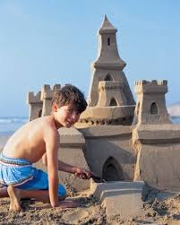

1. Make a mountain
Pick a spot by the shoreline.
Make a gigantic pile of sand.
To speed it along you can use:
<img >
src="mountain1.jfif" alt="mountain1">
<img >
2. Add lots of water
As water drains out of sand, the tiny grains nestle together, forming a cement-like mix; that’s why wet sand near the ocean holds together better than dry sand farther up the beach.
So you want to fill your mountain with water.
How? By making a volcano!
<img >
src="addwater1.jfif" alt="addwater1">
<img >
3. Slap on some towers
Now that you’ve got a foundation, use Wierenga’s pancake method to make towers:
<img >
src="maketower1.jfif" alt="maketower1">
<img >
4. Carve out the castle
Once you’ve made the rough framework, shape it up
Starting from the top, use an offset spatula or a plastic knife to form rooflines and to smooth out your towers and walls
Use a paintbrush to sweep off loose sand as you go.

<img >
src="carvecastle1.jfif" alt="carvecastle1">
<img >
5. Get creative!
Contrast on the surface of your castle takes it to the next level. Varied textures reflect light differently to make features stand out.
Use whatever you’ve got nearby to add details to your creation:
<img >
src="getcreative1.jfif" alt="getcreative1">
<img >